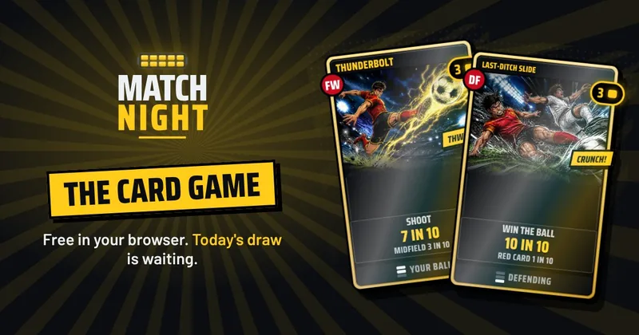
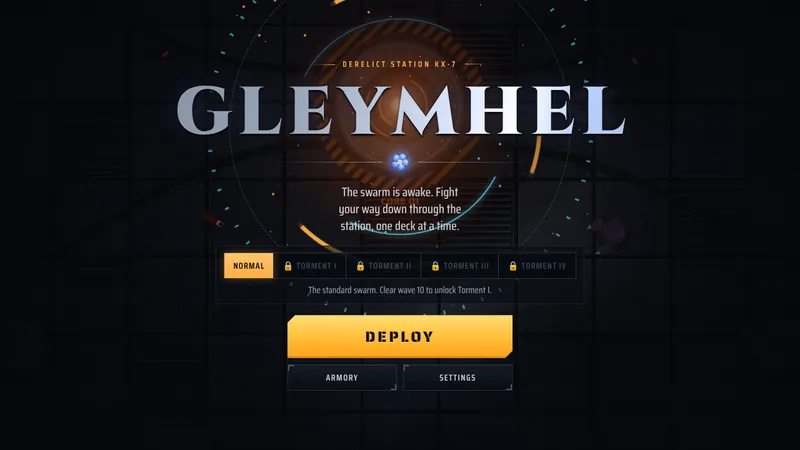

The lab
Small things built with AI, and what each one taught me.
Built by Kevin Logist and Claude
FADE IN:
INT. The lab – weekend
A laptop, a coffee and an AI model that never gets tired. I’m not a developer. I’m building a football game anyway.
Kevin
(to us)
I test AI on myself before I recommend it to a team.
Kevin (V.O.)
Everything here is built by me and Claude, an AI model, without a developer in the room. And no, I’m not starting a game studio. Building something real is simply the fastest way I know to learn where AI helps, where it bluffs, and what that means for a marketing team. Each build ends with what it taught me.
Insert – Matchnight

Featured. In development. A football club manager where your own results write the story. Take any of 92 English clubs up the leagues, build the stadium, and watch every match play out on an isometric pitch. Planned for PC on Steam and for Android.
Kevin
(the lesson)
What it takes to go from an idea to a product with real players, as a team of one plus AI.
Insert – Matchnight: The Card Game

Playable. Free in your browser. A promo game set in the world of Matchnight. Pick a nation, build a deck and take it from the qualifiers to the World Championship final, with a new draw every day.
Kevin
(the lesson)
Sometimes the best ad for a product is a smaller product. A daily draw gives people a reason to come back, and a reason to hear about the big game.
Insert – Gleymhel

Browser prototype. Playable. A sci-fi action RPG that runs in the browser. A swarm has taken over a derelict space station, and you fight your way down, one deck at a time. Works with mouse and keyboard, a controller or a touchscreen.
It started out as Voidfall, until a quick search turned up a game on the Epic Games Store and a board game with that very name. So now it’s Gleymhel: Icelandic gleym, “forget!”, plus the Norse Hel. Fitting, because I forgot the first rule of naming: search before you fall in love.
Kevin
(the lesson)
How far you can push AI on a genre you love before the quality starts to slip.
EXT. The cutting room floor – night
Not every experiment survives. The ones that didn’t will get an honest field note, because killing your darlings is a marketing skill too.